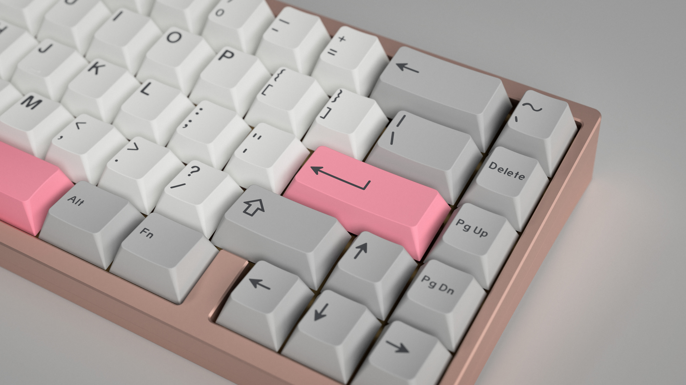
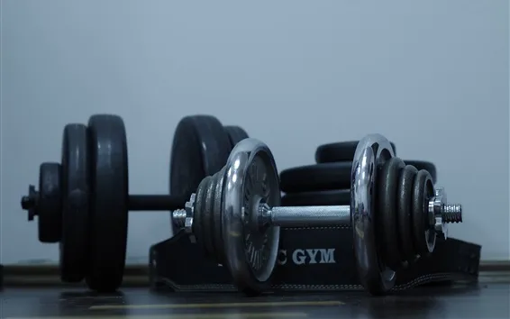
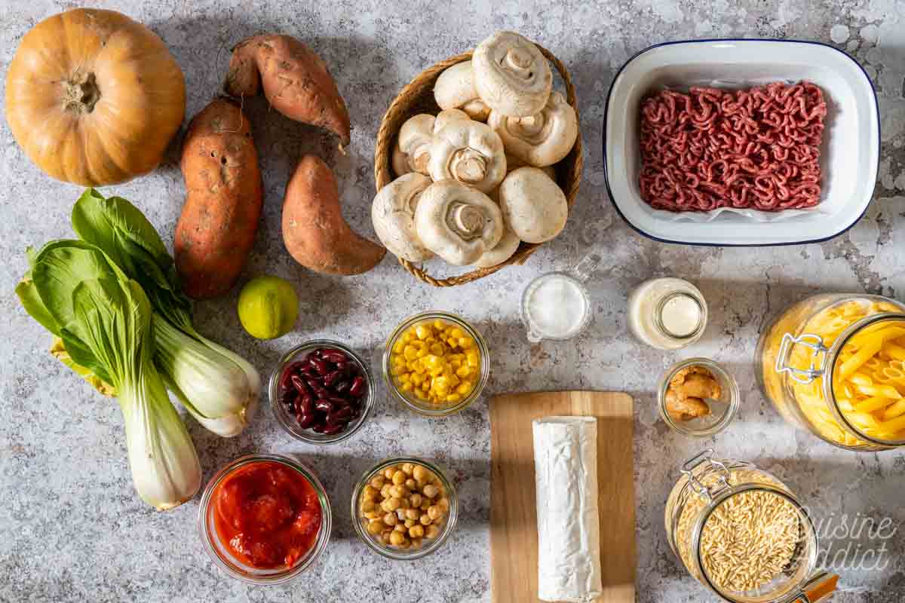
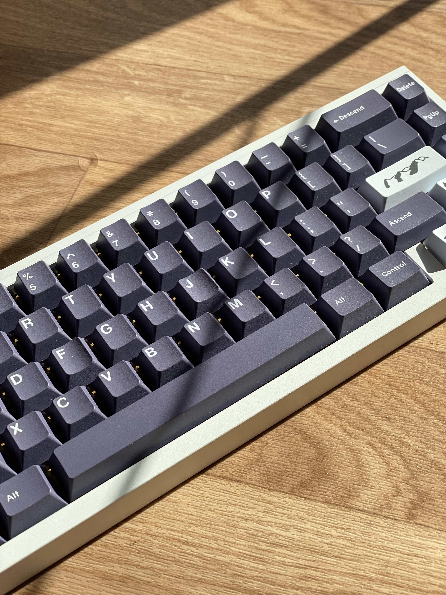

Albs' Website
This is a page about me and my passions but mostly mechanical keyboards!
Anime
Aaaah anime... also including some light novels wonderfully written* I just enjoy it so much. Well of course there are animes I just binge watch to pass time but with some of them I spend an amazing moment enjoying the art and the writting. *COTE, The Saga of Tanya the Evil, The tatami galaxy...

Gymming
This passion started when I was still doing BMX to gain in muscle and thus in perfomance, but time passed and I first stopped practicing obeo and then BMX. Now going to the gym is the only thing which remain.
Batchcooking
I already cooked before comming to Essec but I was way less organized, I considered doing batchcooking before but I took the opportunity of changing city and life style to start it.
Keyboards
Arround summer 2021, I discovered this hobby by luck I suppose. I saw a video about a space bar that sounded deep and immediatly though "oh this sound amazing ! I absolutely need this" and then did my research and have fallen into the mechanical keyboard rabbit hole ever since.
